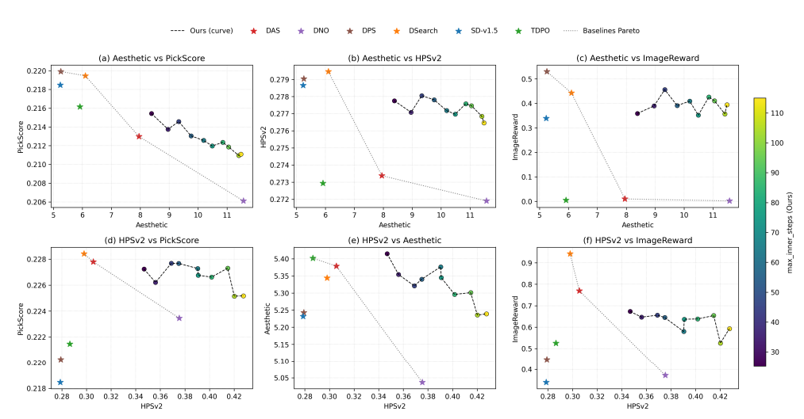
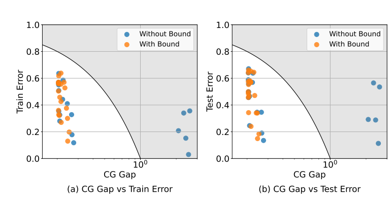
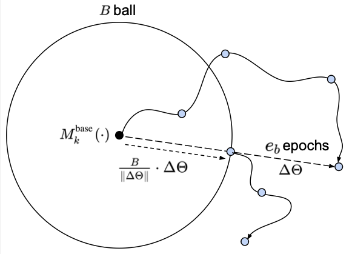
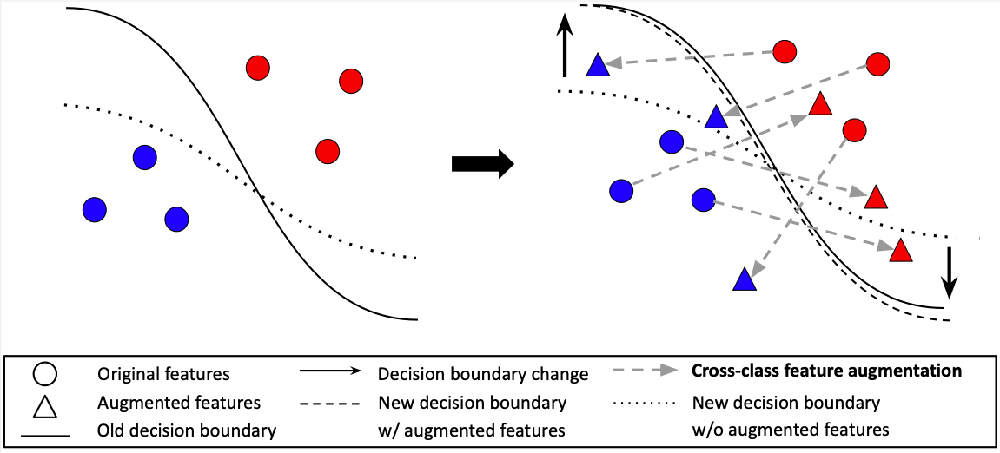
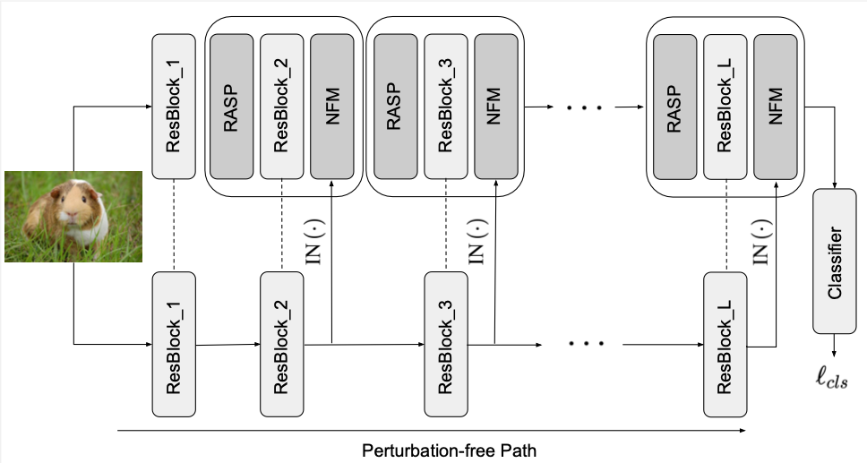

CVPR 2026
Test-Time Alignment of Text-to-Image Diffusion Models via Null-Text Embedding Optimisation
Aligning diffusion models at inference time through null-text embedding optimisation.
ROBOTICS · GENERATIVE MODELS · LEARNING
I study how AI models can improve through post-training and test-time computation, with a focus on embodied AI and controllable generative models.
I am a PhD student at the University of Edinburgh, advised by Timothy Hospedales and Henry Gouk, and a member of the SPADS CDT. Previously, I received my master's degree from Seoul National University, where I worked with Bohyung Han in the Computer Vision Lab.
Interested in working together? Let's get in touch
Robot learning, vision-language-action models, and world-action models.
Reinforcement learning, preference optimisation, and test-time scaling.
Controllable generation, generalisation, and model adaptation.
From model generalisation to test-time alignment.

Aligning diffusion models at inference time through null-text embedding optimisation.

Generalisation guarantees for model merging in low-shot learning.



2024 — Present
PhD · School of Informatics / Engineering
SPADS CDT · Advisors: Timothy Hospedales & Henry Gouk
2022 — 2024
MS · Electrical and Computer Engineering
Advisor: Bohyung Han
2016 — 2022
BS · Mathematical Science & Computational Science
Summa Cum Laude
ICLR · NeurIPS · CVPR · TPAMI
Principles of Computer Vision
Teaching Assistant · SNU · Spring 2023
FCOS
Teaching Assistant · Samsung Electronics · Feb 2022